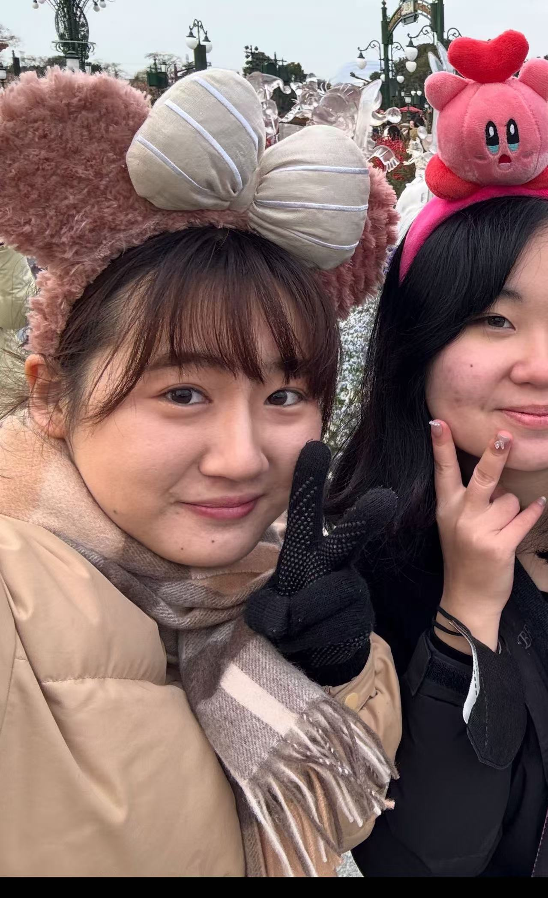

自己紹介

佐藤佑香 (Sato Yuka)
大学3年次に中国・上海へ語学留学をした際、現地での生活を通じて、中国における高度なIT技術に触れる機会がありました。特に、スマートフォン一台で決済から交通、行政手続きまで完結するキャッシュレス社会の利便性に強い衝撃を受け、IT技術が人々の生活を大きく変える力を持っていることを実感しました。この経験をきっかけに、将来はIT業界に携わりたいと考えるようになりました。
また、留学中は授業以外でも多国籍の学生と積極的に交流し、異なる価値観や文化に触れることで、広い視野と異文化理解力を養うことができました。
帰国後は、ProgateやYouTubeを活用してHTMLやCSSを独学し、自分の書いたコードが画面上に形として現れたとき、大きな感動を覚えました。現在はJava言語の習得に取り組み、日々学びを深めています。
私は「ITを通じて、国籍や年代を超えて人々の暮らしを豊かにする」ことを目指したいと考えています。技術力とコミュニケーション力の両面を高めながら、広い視点から価値を提供できる人材を目指して努力を続けていきます。
プロフィール
2018年4月 静岡県立静岡高校 入學
2021年3月 静岡県立静岡高校 卒業
2021年4月 神戸市外国語外国学部中国学科 入学
部活動経験：美術部、茶道部、中国語劇サークル
アルバイト経験：アウトレットのアパレル系バイト